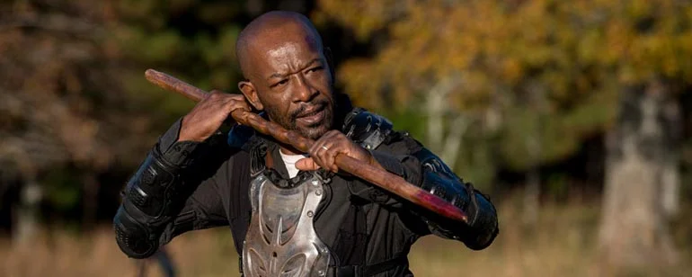
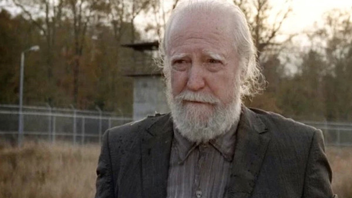
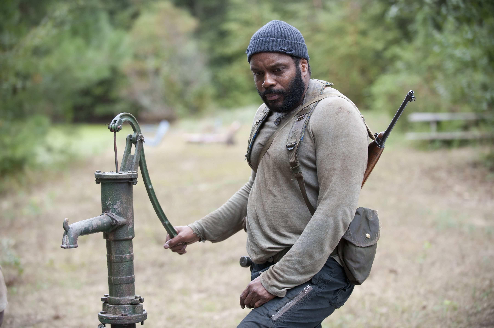

Mostrar Menú
Personajes
A - Z
Z - A
0 - 70
70 - 0
Vivo
Muerto
200 - 0
Nombre:
Rick Grimes
Descripción:
Ex sheriff y líder del grupo de supervivientes.
Nombre:
Negan
Descripción:
Sádico líder de los Salvadores.
Nombre:
Daryl Dixon
Descripción:
Experto cazador y rastreador.
Nombre:
Maggie Greene
Descripción:
Hija de granjeros y líder del grupo Hilltop.
Nombre:
Carl Grimes
Descripción:
Hijo de Rick y Lori Grimes.
Nombre:
Glenn Rhee
Descripción:
Repostero y valioso miembro del grupo.
Nombre:
Michonne
Descripción:
Hábil con una katana y protectora de Andrea.
Nombre:
Shane Walsh
Descripción:
Amigo y compañero de Rick en el pasado.
Nombre:
Rosita Espinosa
Descripción:
Hábil tiradora y miembro del grupo.
Nombre:
Carol Peletier
Descripción:
Madre y superviviente empoderada.
Nombre:
Judith Grimes
Descripción:
Hija de Rick y Lori Grimes, criada en el apocalipsis.

Nombre:
Morgan Jones
Descripción:
Sobreviviente solitario y experto en artes marciales.
Nombre:
Beth Greene
Descripción:
Joven cantante y miembro del grupo.

Nombre:
Hershel Greene
Descripción:
Granjero y médico del grupo.
Nombre:
Beta
Descripción:
Brutal líder de los Susurradores.

Nombre:
Tyreese
Descripción:
Fuerte y compasivo miembro del grupo.
Nombre:
Andrea
Descripción:
Experta en armas de fuego y defensora del grupo.
Nombre:
Lori Grimes
Descripción:
Esposa de Rick y madre de Carl y Judith.
Nombre:
Dale Horvath
Descripción:
Anciano sabio y voz de la razón del grupo.
Nombre:
El Gobernador
Descripción:
Líder autoritario de Woodbury.
Nombre:
Eugene Porter
Descripción:
Experto en ciencia y tecnología.
Nombre:
Paul Monroe
Descripción:
También conocido como Jesús, hábil luchador y explorador.
Nombre:
Lizzie Samuels
Descripción:
Niña perturbada por el apocalipsis zombi.
Nombre:
Tara Chambler
Descripción:
Antigua oficial de la policía y miembro del grupo.
Nombre:
Abraham Ford
Descripción:
Sargento militar y luchador habilidoso.
Nombre:
Rey Ezekiel
Descripción:
Líder del Reino y dueño de Shiva, el tigre.